服务器 性能资源指标监控与服务水平协议(SLA)
目标
- 掌握监控应用服务器性能资源指标的方法
- 了解服务水平协议的功能和作用及使用方法
一、服务器 性能资源指标监控
1.1 资源性能指标
资源性能指标就是预期结果，性能测试的目的和功能测试一样，观察实际结果是否与预期结果相符
业务需求：
1). 系统在1000人并发访问的时候，要求CPU利用率不超过75%；
2). 系统在500人进行订单查询的时候，系统可用内存要在20%以上。
提示：
1). “CPU利用率不超过75%”、“可用内存20%以上”就是资源性能指标
2). 资源性能指标依靠操作系统提供的【性能计数器】来记录
1.2 性能计数器?
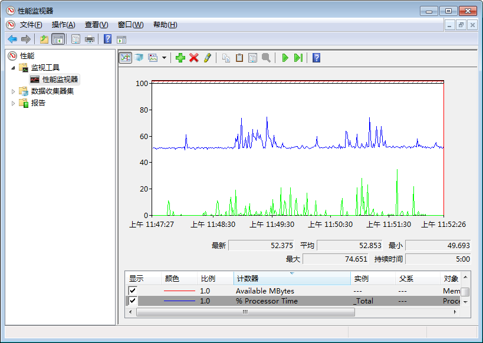
性能计数器也叫性能监视器，是操作系统提供的一种系统功能，它能实时对操作系统内应用程序的性能数据进行采集和分析
Windows操作系统使用系统自带的 perfmon 工具
Linux操作系统使用相应的命令或第三方工具，工具如：nmon
1.3 服务器资源 常用指标
| 指标名称 | 含义 | 关注点 | 建议值 |
|---|---|---|---|
| % Processor Time | CPU利用率 | 1. CPU使用率峰值：最大值即为CPU的使用率峰值 2. CPU平均使用率：平均值为CPU的平均使用率 |
75%-85%之间 过低则CPU利用率不高，过高则CPU成为系统瓶颈 |
| Available MBytes(Memory) | 可用内存(MB) | 1. 内存占用率峰值(%) = (最大物理内存 - 最大空闲内存) / 最大物理内存 * 100% 2.内存平均使用率(%) = (最大物理内存 - 平均空闲内存数) / 最大物理内存 * 100% |
可用内存保留20%左右 |
| % Disk Time | 硬盘读写时间比 | 正常值小于10 | 此值过大表示耗费太多时间来访问磁盘，可以考虑增加内存，或更换更快的硬盘来进行优化 |
提示：
1). % Processor Time 指标在 Perfmon 工具 Processor 系列内
2). Available MBytes 指标在 Perfmon 工具 Memory 系列内
3). % Disk Time 指标在 Perfmon 工具 PhysicalDisk 系列内
二、添加资源性能计数器指标
在LoadRunner中添加资源性能计数器
需求：
在LR数据监控中监控应用服务器可用内存、CPU使用率、硬盘读写时间
(参考1.4服务器资源指标)
2.1 操作步骤
- 在 Available Graphs 激活 System Resource Graphs(系统图表)
- 在系统资源图表上鼠标右键 -> Add Measurements(添加度量值)
2.1.1 激活System Resource Graphs(系统图表)
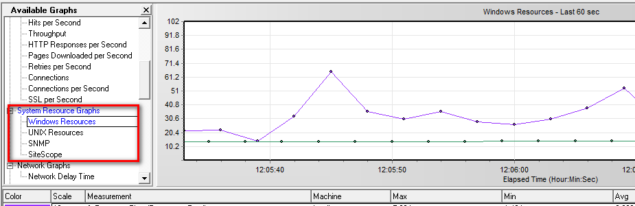
1. 这里我们以 Windows 系统为例
2. 双击 Windows Resources 激活(或拖拽)，激活；
3. 激活后在右侧图表区出现 - Windows Resources 图表
4. 在 Winddows Resources 图表添加服务器-资源指标
2.1.2 Windows Resources图表 添加指标
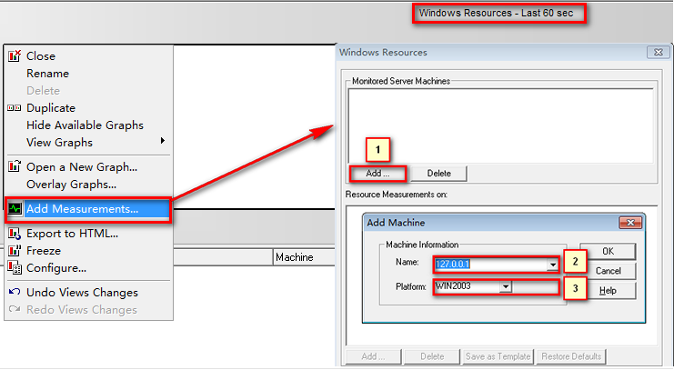
1). Windows Resources图标上右击 -> Add Measurements(添加度量值)
2). 标1：弹出添加服务器窗口
3). 标2：Name:为服务器IP地址
4). 标3：操作系统可以默认(添加成功后会自动获取系统版本，比如Win7)
2.1.3 添加指标(CPU、内存、硬盘)
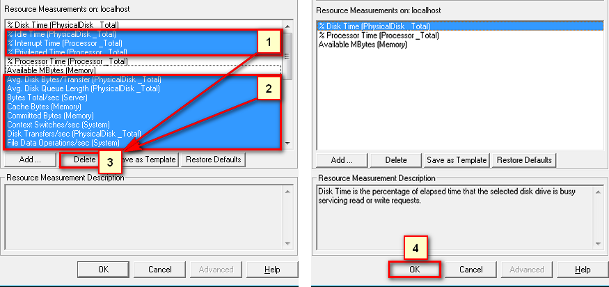
1). 选中标1、标2(本次不关注的指标)
2). 标3：删除多余指标(标1、标2)
3). 标4：点击OK 添加列表内指标
提示：
1). 默认把操作系统常用指标全部列出，需要删除多余指标
2). 全部选中的快捷键为:Ctrl + / (右shift键旁边的问号键)
2.1.4 添加指标(CPU、内存、硬盘) 效果图
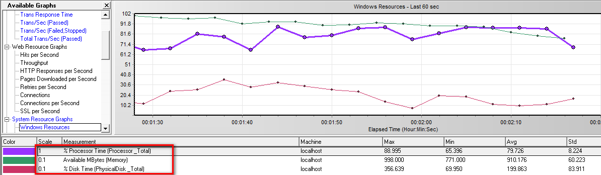
2.2 扩展 修改图表监控区显示图表数量
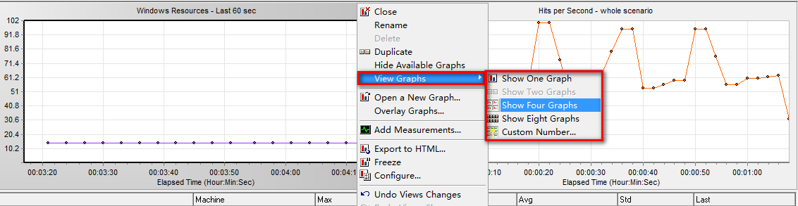
- 图标区域鼠标右键 -> View Graphs
- 菜单(View)-View Graphs
提示：
1. 双击指定图表，可放大图表；
2. 选中指定图表右击 -> configure可对相应图表属性、样式进行配置
2.3 监控Windows资源 注意事项
- 确保LR控制机与需要监控的PC机网络通畅(ping 192.168.X.X )
- Remote Procedure Call (RPC)、Remote Procedure Call (RPC) Locator、Remote Registry、 Workstation 这些服务都需要确认为已启动状态。
- 本地账户共享和安全模型-经典-对本地用户进行身份验证不改变其本来身份【win7旗舰版默认】
(gpedit.msc 计算机配置->Windowns设置->安全设置->本地策略->安全选项->网络访问:本地账户共享和安全模型)
三、服务水平协议(SLA)
Service Level Agreement(SLA) 是在场景执行之前定义相应的负载测试目标，在场景运行之后 Analysis 将运行时收集的指标值和SLA设定的进行对比，然后确定本次测试是成功还是失败。
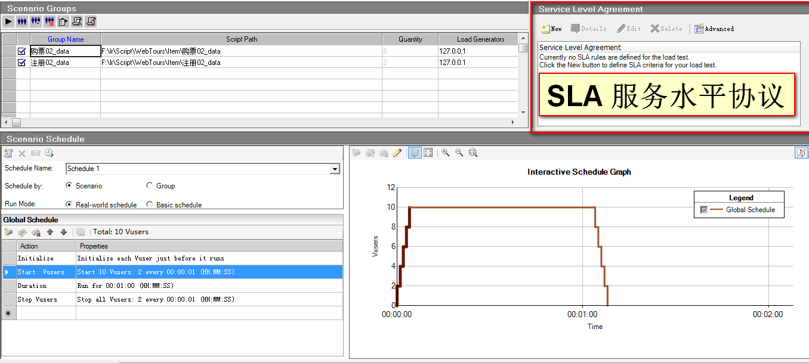
- 在场景设计区域，右上侧有个SLA专栏，我们需要对它的作用及使用做个了解；
- 测试需要有预期结果，SLA就是给场景运行之前给相应指标设定个预期结果。
需求1
订票网站，20用户同时订票，登录在3s内完成，订票在15秒内完成；
四、SLA使用
4.1 新建SLA
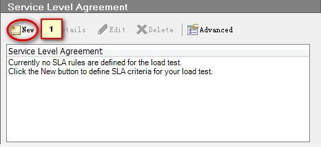
点击 标1 新建SLA服务
4.1.1 新建SLA
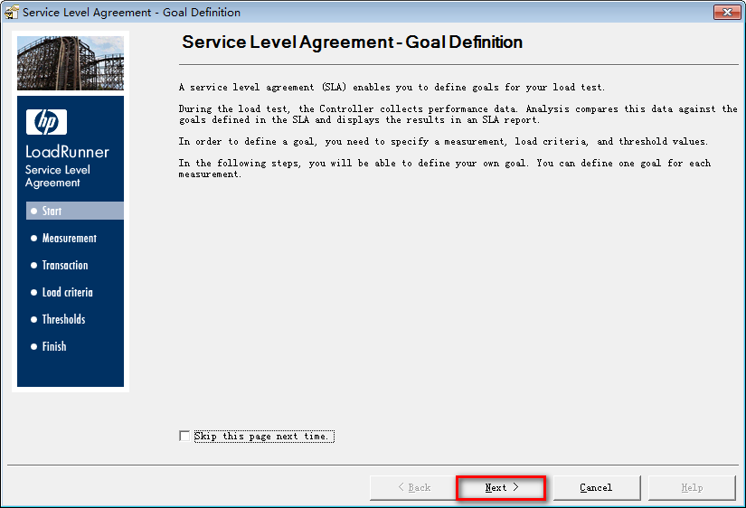
点击 Next 进行下一步
4.1.2 选择指标
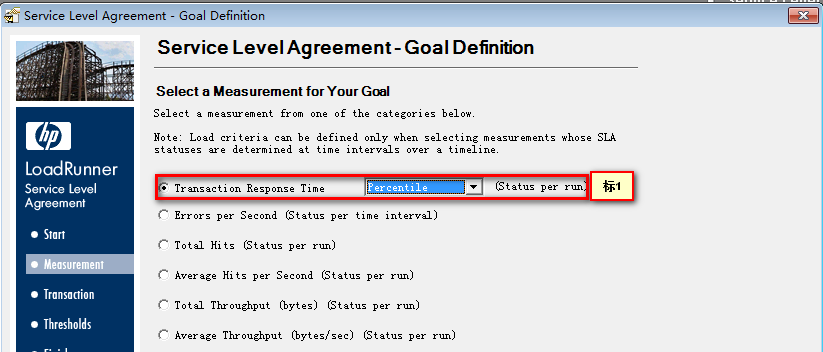
- 需求为登录、订票事务时间，所以我们选择 标1
- 标1 有两个选项Percentile(百分比)、Averge平均值 【选择：Percentile】
提示：
1. Percentile(百分比)默认为90%
4.1.3 选择事务
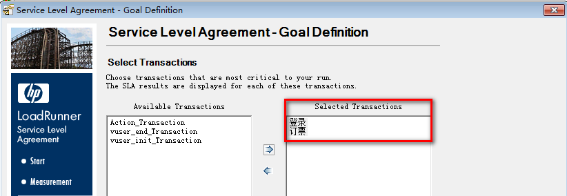
添加登录和订票两个事务
提示：
1. 录制或编写脚本的时候，必须添加相应的事务
4.1.4 设置事务预期值
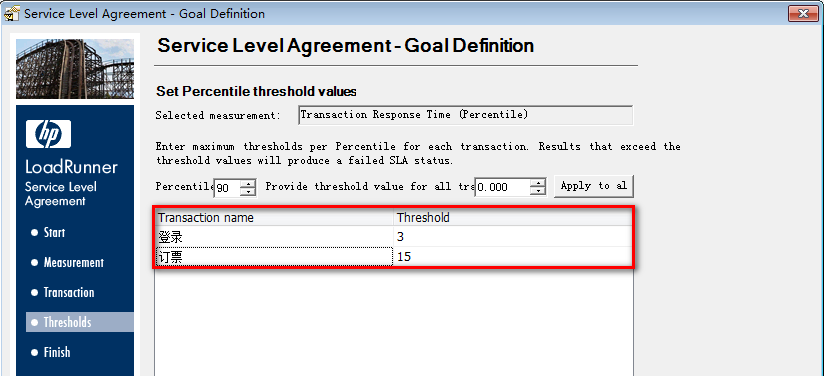
- 设置90%登录用户时间小于等于3秒
- 设置90%订票业务小于等于15秒
4.1.5 完成SLA服务创建
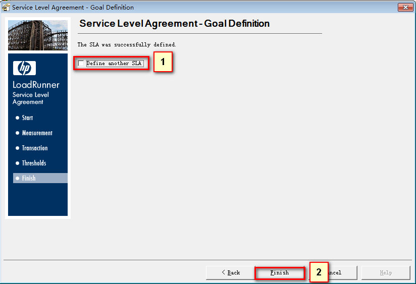
- 勾选点击 标2 完成当前SLA添加后继续添加SLA服务
- 点击完成当前SLA服务【使用】
4.1.6 查看SLA服务
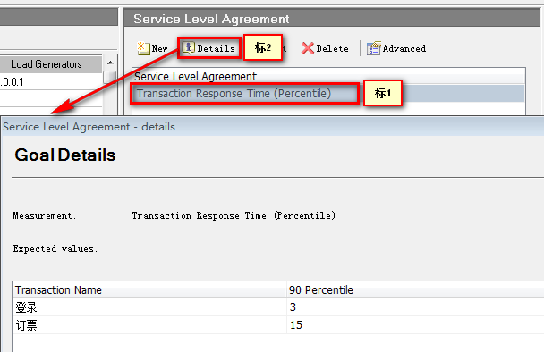
标1:刚创建的SLA服务 标2:查看服务细节
4.1.7 Analyze Results SLA报告
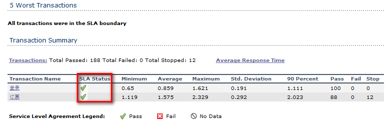
状态通过
4.1.8 Analyze Results SLA明细
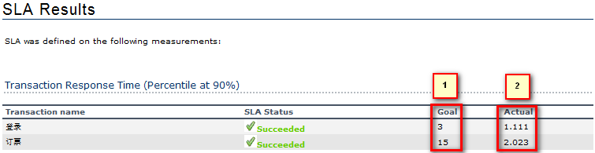
- Goal:预期目标值
- Actual:实际值